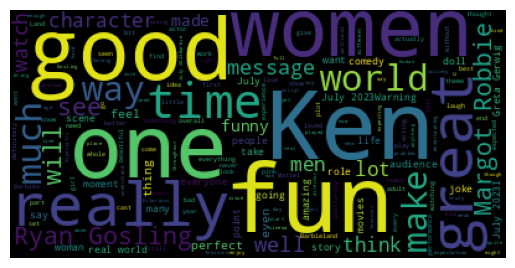

One of the greatest lessons I’ve learned in my professional career is that simple is almost always better. This applies to anything from data science to building presentations. NLP has been a hot topic recently and while I think large language models are pretty awesome, I find that a lot of problems can be solved with a simple and more elegant solution. Almost every app I use is trying to force using LLMs, where in reality a simple solution would probably work better. Below are some techniques that I’ve personally used plenty of times and that in a lot of cases answered questions my stakeholders had or got me 80% there.
Word Cloud
A humble word cloud is my go-to tool to figure out, broadly speaking, what’s going on with the text I’m working with. It gives me a sense of sentiment, potential topics, and any weirdness I should pay attention to.
Barbie movie has been making the headlines recently, let’s take a look at what people think about it:
import pandas as pd
import matplotlib.pyplot as plt
from wordcloud import WordCloud, STOPWORDS
# load the dataset
# dataset was downloaded from https://www.kaggle.com/datasets/ibrahimonmars/imdb-reviews-on-barbie
barbie_movie_reviews = pd.read_csv("barbie_Cleaned.csv")
full_text = " ".join(txt for txt in barbie_movie_reviews.text)
# modifying stopwords
stopwords = set(STOPWORDS)
stopwords.update(["Barbie", "Permalink", "film", "movie", "vote", "Sign", "review", "found", "helpful"])
# generate a wordcloud
wc = WordCloud(stopwords=stopwords).generate(full_text)
plt.imshow(wc)
plt.axis("off")
plt.show()
With word clouds, the bigger the word the more frequent it is in the dataset. So it looks like, on a very very high level, people think that Barbie movie is good (words like “fun”, “great” and “good” are fairly frequent). This makes sense because it aligns with the score from rotten tomatoes (at the time of writing its > 80%).
Of course, this is not perfect and it’s missing a lot of nuance, but if you’re in a pinch and are trying to figure out directionally what’s going on with your product/service, this is not a bad first solution while you’re working on a more complex one.
Regex
Regex is super powerful. In my experience, before building a fancy classifier model, it pays off to build a simple regex-based system. Why? Here are a few reasons:
- You get to deploy your solution to customers fast (if you have domain experts, you can probably build something in a few days)
- You can use your regex solution to label your dataset
- You might learn that you don’t really need a fancy classifier
Let’s say that we work on a team that wants to address complaints about that Barbie movie and we’d like to build a model that could help us with that. However, we have to start addressing complaints immediately and that’s exactly where regex comes in. Here’s something that might work:
# this assumes you loaded the dataset from the previous step
import re
# define our regex pattern
regex_pattern = r'bad|horrible|poor|horrific'
# flag potential negative comments
barbie_movie_reviews['potential_negative_comment'] = barbie_movie_reviews.text.str.contains(regex_pattern, regex=True)
# sample a potentially negative review
barbie_movie_reviews[(barbie_movie_reviews['potential_negative_comment'] == True)]['text'].sample(1).to_list() # here's the part of text that got flagged
...Wow, this was really bad. Here is the truth. It's boring. Plus...Here we see that a person thinks the movie is really bad. We can go down the list of potential negative comments and address the relevant ones.
Of course, this will flag false positives (a comment that is flagged as negative but really isn’t) but given that we want to start working on negative comments immediately this will do the job. It will also give us time to develop a more complex model if we want to go down that route.
Topic Modeling
Sometimes I need to go beyond word clouds and understand different topics that occur in a given collection of documents. This can be quite a task, so to get started (and sometimes this is all that I need) I use TFIDF + Non-Negative Matrix Factorization (NMF) to figure out different themes that might occur in the text I’m working with.
Explaining TF-IDF and NMF is beyond the scope of this blog post, but TF-IDF is a technique to vectorize text and NMF is a fancy way of figuring out which terms are most important given you provide it with vectorized text.
from sklearn.decomposition import NMF
from sklearn.feature_extraction.text import TfidfVectorizer
# we have to vectorize our text before we use NMP
tfidf_vect = TfidfVectorizer(max_df=0.8, min_df=2, stop_words='english')
doc_term_matrix = tfidf_vect.fit_transform(barbie_movie_reviews['text'].values)
# create five topics using NMF
nmf = NMF(n_components=5)
nmf.fit(doc_term_matrix)
# extract & print top 10 words from third topic
fourth_topic = nmf.components_[3]
top_topic_words = fourth_topic.argsort()[-10:]
for i in top_topic_words:
print(tfidf_vect.get_feature_names_out()[i])gosling
margot
greta
robbie
real
gerwig
ken
world
film
barbieHere we instruct NMF to create 5 topics and explore the top words in the 4th topic. We can see that 4th topic is probably focused on actors. What can we do with this information? One thing we can do is explore each topic in-depth and understand people’s sentiments about those topics. Once we know that we might decide to respond to those people and engage with that audience.
NMF and TF-IDF are not even close to perfect. For example, you have to preselect a number of topics that you want and that can be pretty finicky. However, if you put some time into it and fine-tune it, it might get you where you need to be, or at least provide a start.
Conclusion
Those are some of my favorite simple and practical NLP techniques. I always consider those before I start throwing giant transformer models at the problem.
Do you have a favorite technique? What’s your favorite way of solving NLP problems? Feel free to reach out to me on the internet!